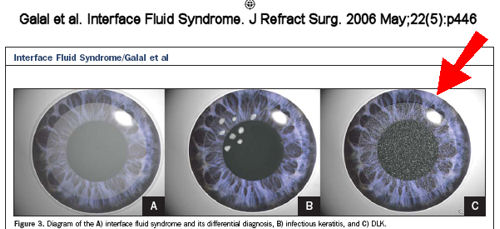

Mah et al: "The incidence of DLK after LASIK surgery (0.75% to 32%) has increased worldwide since it was first described in 1998, paralleling the increase in the number of patients who have had this popular form of refractive surgery."
Source: J Cataract Refract Surg. 2006 Feb;32(2):264-8.
Thomas S. Boland, M.D.: "DLK can occur with even trivial trauma at any time following LASIK, even many years out from the original surgery." DLK Adds Insult to Injury. Review of Optometry. 12/17/2012
If you experienced DLK (inflammation) or other complications after LASIK, the FDA wants to hear from you. File a MedWatch report with the FDA online. Alternatively, you may call FDA at 1-800-FDA-1088 to report by telephone, download the paper form and either fax it to 1-800-FDA-0178 or mail it to the address shown at the bottom of page 3, or download the MedWatcher Mobile App for reporting LASIK problems to the FDA using a smart phone or tablet. Read a sample of LASIK injury reports currently on file with the FDA.
Patients with LASIK complications are invited to join the discussion on FaceBook
In the image below, the red arrow points to an illustration of an eye with DLK after LASIK.

One of the most common complications of LASIK is inflammation known as diffuse lamellar keratitis (DLK) or Sands of the Sahara. Diffuse lamellar keratitis is characterized by a diffuse white, granular infiltrate occurring within a few days after LASIK. DLK is a potentially serious, sight-threatening complication. It may be associated with redness, sensitivity to light, tearing, pain, and reduced vision.
DLK is classified by four stages depending on the severity and location of the inflammation. DLK should be immediately treated with topical steriods. If DLK progresses it may require surgical intervention. Severe cases of DLK may progress to flap melt with associated vision loss.
Proposed causes of DLK include particles from the eye drape, epithelial defects, meibomian secretions, surgical glove talc, debris from surgical sponges, and contamination of reservoir sterilizers by gram-negative endotoxins, among others. The rate of DLK is higher with femtosecond (all-laser, bladeless) LASIK flap creation than with blade-created flaps.
Click here for more information and medical studies: DLK after LASIK
Click here to read "A Mysterious Tale: The Search for the Cause of 100+ Cases of Diffuse Lamellar Keratitis".
Other articles of interest:
Deciphering femtosecond-related DLK
DLK a danger for more than a year after LASIK
A worrisome complication of LASIK
Late-onset diffuse lamellar keratitis following laser in situ keratomileusis.
Can J Ophthalmol. 2019 Feb;54(1):125-129.
Cheung AY, Anderson BJ, Heidemann DG, Gupta C.
OBJECTIVE:
To analyze 12 cases of late-onset diffuse lamellar keratitis (DLK) following uncomplicated LASIK and propose a method of management.
DESIGN:
Retrospective observational case series, literature review.
PARTICIPANTS:
Patients who developed late-onset DLK following LASIK.
METHODS:
Retrospective chart review of all patients with late-onset DLK from January 2014 to August 2015. Data collected included demographic information, probable cause of DLK, stage of DLK, baseline examination, treatment, clinical course, outcomes, complications, and last follow-up examination. Review of relevant literature included searching for all prior cases and case series relating to "diffuse lamellar keratitis," "late-onset DLK," "Secondary Sands," and "delayed-onset DLK" by searching PubMed with these search terms.
RESULTS:
Twelve eyes of 11 patients presented with late-onset DLK following LASIK. Onset ranged from 8 months to 17 years following LASIK. Stage of DLK ranged from stage I to III, and all patients responded well to aggressive corticosteroids without lifting of the LASIK flap. Final visual acuity for stage I/II and III eyes did not demonstrate a significant difference (p = 0.218). DLK resolved by a mean of 4.86 weeks for all eyes.
CONCLUSION:
Late-onset DLK can present at any time following LASIK with a wide range of inciting factors causing a nonspecific (and likely immune-related) inflammatory reaction. Based on our findings, aggressive oral and topical corticosteroids should be tried before lifting the LASIK flap as long as infection is not suspected or inciting debris is not seen in the flap because the vast majority resolve with such therapy.
Bilateral corneal opacities in a LASIK patient after the use of titanium eye shields [7 years after LASIK].
J Cataract Refract Surg. 2011 Jun;37(6):1160-4.
Litzinger TC, Vastine D.
Abstract
We report a case of bilateral corneal opacities in a laser in situ keratomileusis (LASIK) patient who subsequently had carbon dioxide (CO(2)) laser skin resurfacing. The presumed etiology of the visually significant corneal opacities was late-onset diffuse lamellar keratitis (DLK), secondary to traumatic corneal abrasions from the use of metal eye shields. The DLK went untreated for 1 month, resulting in permanent interface scarring and a corrected distance visual acuity of 20/30 in the patient's right eye and 20/20 in the left eye. We think patients who have had LASIK and are planning to have CO(2) laser skin resurfacing or any procedure that uses protective metal eye shields should be counseled about the risk for late-onset DLK as a potential complication. This warning is particularly germane now as an increasing number of patients who have had LASIK are entering the decades of life when cosmetic surgery is most likely to be sought.
Diffuse lamellar keratitis 8 years after LASIK caused by corneal epithelial defect.
Iovieno A, Amiran MD, Legare ME, Slomovic AR.
J Cataract Refract Surg. 2011 Feb;37(2):418-9.
Excerpt: A 34-year-old man was referred to the Cornea/Refractive Surgery Clinic at University Health Network, Toronto, Ontario, Canada, with a complaint of watering, itchiness, and redness in his right eye that started the night before and evolved into a sharp stabbing pain the next morning. No history of eye trauma or contact lens usage was reported. The medical history was unremarkable; the ocular history was significant for LASIK vision correction in both eyes 8 years earlier.
Incidence of diffuse lamellar keratitis after LASIK with 15 KHz, 30 KHz, and 60 KHz femtosecond laser flap creation.
J Cataract Refract Surg. 2010 Nov;36(11):1912-8.
Choe CH, Guss C, Musch DC, Niziol LM, Shtein RM.
From the Department of Ophthalmology and Visual Sciences (Choe, Musch, Niziol, Shtein), the Medical School (Guss), and the Department of Epidemiology (Musch), University of Michigan, Ann Arbor, Michigan, USA.
Abstract
PURPOSE: To compare the incidence of diffuse lamellar keratitis (DLK) after laser in situ keratomileusis (LASIK) with flap creation using the 15 kHz (FS15), 30 kHz (FS30), or 60 kHz (FS60) femtosecond laser.
SETTING: University-based academic practice, Ann Arbor, Michigan, USA.
DESIGN: Retrospective comparative case series.
METHODS: Consecutive myopic LASIK cases performed between January 1, 2005, and June 1, 2007, using the IntraLase FS15, FS30, or FS60 femtosecond laser for flap creation were reviewed. Preoperative clinical characteristics, treatment parameters, and intraoperative and postoperative complications were recorded. Statistical comparisons were made using repeated measures analysis, analysis of variance, chi-square, and Fisher exact tests.
RESULTS: Five hundred twenty eyes of 274 patients were included in the study. One hundred seventy-six eyes (93 patients) were treated with the FS15 laser, 180 eyes (93 patients) with the FS30 laser, and 164 eyes (89 patients) with the FS60 laser. Seventeen eyes (10%) in the FS15 laser group, 24 eyes (13%) in the FS30 laser group, and 23 eyes (14%) in the FS60 laser group developed DLK. There was no statistically significant difference in the incidence of DLK between the 3 groups (P = .68).
CONCLUSION: There was no significant difference in the incidence of DLK between the FS15, FS30, and FS60 groups.
A case of late-onset diffuse lamellar keratitis 12 years after laser in situ keratomileusis.
Kamiya K, Ikeda T, Aizawa D, Shimizu K.
Jpn J Ophthalmol. 2010 Mar;54(2):163-4.
Excerpt:
We present herein a case of DLK with an extremely delayed onset, occurring 12 years after LASIK, necessitating intensive steroidal treatment to avoid subsequent visual disturbances....
There have been several reports of late-onset DLK after lamellar surgery, but these cases occurred within 3 years of surgery... In the present study, we found epithelial ingrowth after treatment, indicating incomplete flap integrity at its edge...
In summary, this case report indicates that LASIK can cause DLK as late as 12 years postoperatively, which also emphasizes the importance of long-term follow-up after this surgery. Refractive surgeons should be held responsible for post-LASIK patients not only in the early but also in the late postoperative period, since this postoperative complication can be resolved with minimal sequelae if diagnosed in a timely fashion.
Confocal Microscopy Comparison of IntraLase Femtosecond Laser and Moria M2 Microkeratome in LASIK.
Journal of Refractive Surgery Vol. 23 No. 2 February 2007.
Jaime Javaloy, MD, PhD; María T. Vidal, MD, PhD; Ayman M. Abdelrahman, MD; Alberto Artola, MD, PhD and Jorge L. Alió, MD, PhD.
Excerpt:
"Diffuse lamellar keratitis consists of a multi-etiologic syndrome that expresses variable degrees of inflammation at the interface of eyes operated by LASIK.37,38 As DLK after LASIK using a femtosecond microkeratome has not been reported previously, the 17% prevalence rate of this syndrome (even considering that just 6.25%—1 case—was greater than grade I or II) in our series has to be taken into account."
Journal of Refractive Surgery Volume 17 May/June 2001
Complications of Laser in situ Keratomileusis: Etiology, Prevention, and Treatment
Renato Ambrósio Jr, MD; Steven E. Wilson, MD
Excerpts:
Smith and Maloney thoroughly described diffuse lamellar keratitis (DLK) (American Academy of Ophthalmology, San Francisco, CA, November, 1997).71 Other reports have appeared since that time (Linebarger EJ. Diffuse lamellar keratitis: trouble in paradise? ASCRS Film Festival, Grand Prize Winner, 1999).20,41,72-78 It has also been called sands of the Sahara syndrome (Bobby Maddox, MD, El Paso, TX, coined the phrase), because of the characteristic wavy appearance at slit-lamp examination.
In severe cases, it is associated with stromal necrosis and irregular astigmatism.
However, we have seen two cases of infectious keratitis in which treatment was inappropriately delayed because of erroneous diagnosis of DLK. Both cases had severe vision loss.
The incidence of DLK is highly variable. One report noted an incidence of approximately 1 in 500.74 Some high volume LASIK surgeons have reported never seeing a case in their own practice. We have seen only two mild cases in 3000 LASIK procedures. Others have experienced focal outbreaks of DLK that have included dozens of patients.
Another grading system has been proposed by Linebarger (Linebarger, 1999, cited above).75 Stage 1 DLK is typically seen on day 1 postoperatively as white, granular cells in the periphery with sparing of the visual axis. Stage 2 Typically seen on postoperative day 2 or 3, shows white cells in the visual axis. Stage 3 DLK involves an aggregation of cells clumped in the visual axis and associated with haze and reduced vision. Stage 4 Involves central stromal necrosis, melt, and secondary hyperopia with irregular astigmatism.
At the other extreme, severe (grade 4) cases typically have decreased vision and severe pain associated with marked interface inflammation and necrosis that results in topographic flattening of the corneal contour, secondary irregular astigmatism, and poor vision.
Many potential etiologies for DLK have been proposed (Linebarger, 1999, cited above).75-77 Most of these are based on speculation without supporting data. These have included betadine from surgical preps, impure balanced salt solution, retained meibomian secretions and other tear film components, metallic debris, use of improper detergents, talc from gloves, thermal effects from the excimer laser, lubricants on the microkeratome or blades, topical medications such as anesthetics, bacterial cell wall hypersensitivity, and biofilms from inadequate sterilization protocols.
The bacterial cell wall hypersensitivity mechanism could have been the underlying factor in a recent epidemic of DLK.77 The authors suggested that the microkeratome or irrigating cannula became contaminated by bacteria. These bacteria may reside in water left standing in the sterilizer. If the contaminated instruments are cleaned and left to dry, bacteria could proliferate on residual trace protein and the bacterial cell count could increase significantly.
These data suggest that injury to the surface epithelium or epithelial debris left within the LASIK interface triggers production of factors that are chemotactic for inflammatory cells via interleukin-1 release. This mechanism could account for many DLK cases.
Surgical technique may limit DLK, whatever the underlying mechanism.
Eyes with severe DLK are at high risk for stromal necrosis that may be focal and result in haze, irregular astigmatism, and hyperopic shift.
Disclaimer: The information contained on this web site is presented for the purpose of warning people about LASIK complications prior to surgery. LASIK patients experiencing problems should seek the advice of a physician.